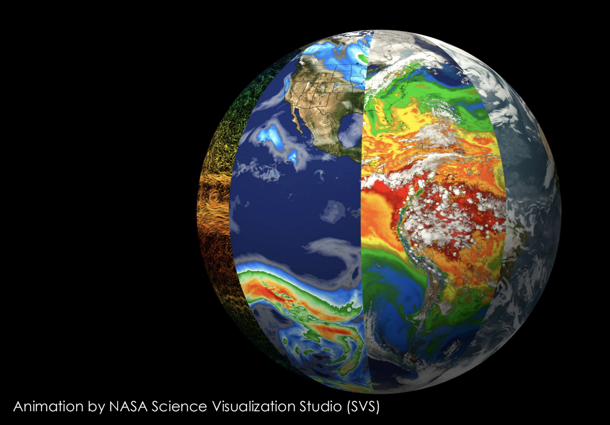
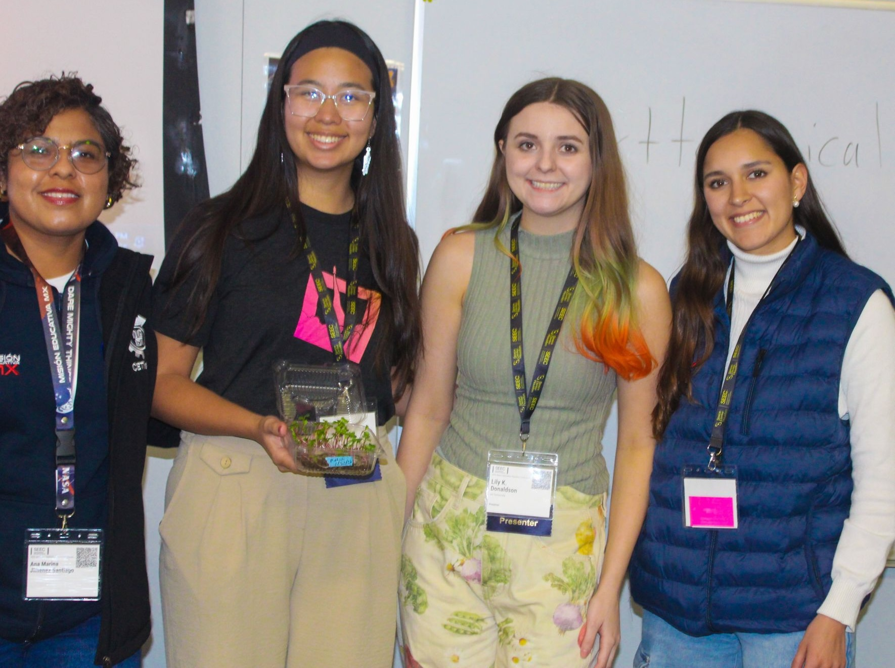
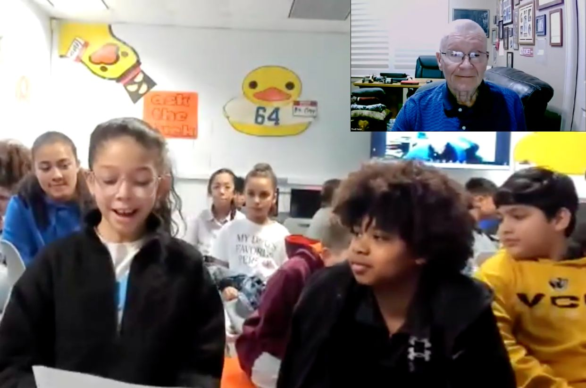

The STEM Education Ambassadors program, led by the Office of STEM Engagement at NASA’s Goddard Institute for Space Studies, connects educators nationwide with NASA’s Science and Technology Education for Land/Life Assessment (STELLA) mission. As Ambassadors, we participate in ongoing professional learning focused on NASA’s workforce development initiatives, Earth and environmental science content, and updates from the Science Mission Directorate, Earth Science Division, GISS, GSFC, Science Activation teams, and partner organizations.
Through this community of practice, Ambassadors integrate NASA data, tools, experts, and mission content into classroom instruction and community engagement efforts. Our work expands access to authentic NASA resources while building meaningful STEM pathways for students and educators.
Click a pin to view a profile.


